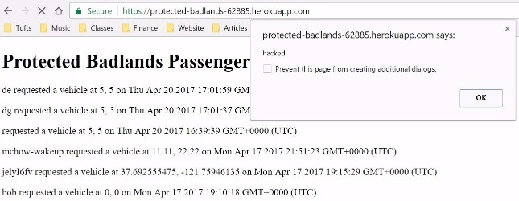
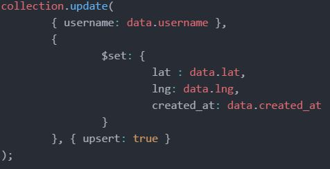
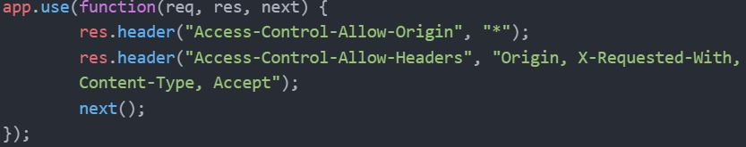

The Black Car Service is a ride sharing service that allows either passengers or drivers to locate one another on Google Maps. There are two parts: the client-side and server-side aspect. The client-side handles the front end of the service, allowing for passengers to seek vehicles and drivers to seek passengers via XMLHttpRequests objects. The objects available are then displayed on the map. The server-side uses Heroku, Node.js and Express - network and web applications to handle the JSON data that is sent by the client side to determine which vehicles or passengers get displayed on the map.
I was hired to find and document security and privacy vulnerabilites within the applications.
First, I performed attacks without reading the source code - also known as "black box" testing. This meant sending in various user input that would try to break the application.
Next, I looked into the source code to use it against itself to try to break it. This was done through cross site scripting for user input. This is known as "white box" testing.
Tamper data was also used to view and modify HTTP/HTTPS headers and post parameters.
There were three main security issues found within the application. The first was a cross site scripting vulnerability. This basically means that a malicious user can insert code onto the page of the app, causing the site to completely break. The second was having multiple check-ins for the same driver. This means that the same driver will be seen as two different drivers at different locations on the map. The third issue is setting access to who can actually access the app. If the information was sensitive, then with this current configuration anyone can acess the data.
Location: https://boiling-shore-70331.herokuapp.com/ Severity: HIGH. Everytime someone opens the main page of the app they have to disable the alert to render the page. I found this by running this command to their app: curl --data "username=<script>alert('hacked')</script>&lat=5&lng=5" https://protected-badlands-62885.herokuapp.com/submit
This problem can be resolved by removing all non alphanumeric characters in the post method before inserting into the collection. This is a clear example of never trusting user input.
Location: https://protected-badlands-62885.herokuapp.com/submit Severity: HIGH. There are two issues within their POST /submit API. The first is that multiple check-ins for the same username are allowed in the vehicles and passengers collection. I found this by curling some data to their POST method and it returned the list of vehicles with two of the same usernames. It also returned vehicles that were past the 5 minute limit meaning that the vehicles that were displayed could have already stopped working and can't pick passengers up.

This problem can be resolved by using the $set and $upsert command when inserting into a collection. The $set operator replaces the value of a field with the specified value. The time check can be fixed by using the standard Date object to query the data base based off it.
Location: https://protected-badlands-62885.herokuapp.com/ Severity: HIGH. By default, web browsers do not allow AJAX requests to servers other than the site you're visiting. This is the same-origin policy. CORS allows who you specify to access the endpoint on your server. That being said in this application (as with any assignment 3 completed), the Access-Control-Allow-Origin is set so anyone can access the API. This means that anyone can access the GET / API with all of the passengers info based on their times and locations. Since this was used just by students, this wasn't an issue. However, this could be a problem is someone was malicious and the information stored in the API was sensitive. The malicious user could send a POST request to modify the collection data or even alter it, causing major issues for the car sharing service. I found this while thinking about the security access behind the application.
This problem can be resolved by setting specific access to the users that should be able to see the data.
Some things to look for in the future are privacy of information. Privacy is extremely important in today's world. This means allowing access to the application for only certain users. However, the cost of this is losing the convenience of having anyone access the application. To conclude, considering the severity of these three security issues, I estimate that the cost of fixing this application will be around $1000.